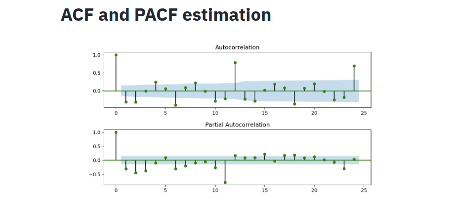

Something it might be dificult to estimate the amount of terms that your model needs, chiefly when it comes to ARIMA. In this part, you be shown to some types of analysis that you can do to estimate the parameters of your model.
Important: by default, Arauto will try to find the best parameters for ARIMA or SARIMA for you. The recommended values will be shown below the ACF and PACF plots, but you also can explore different parameters.
One good and intuitive approach to estimate the terms for seasonal and non-seasonal autoregressive models is to look at autocorrelation function and partial autocorrelation function. We are not going too deep in theorical concepts around these functions, but there are great resources around the web (see References section below). Basically, the autocorrelation function will show the relationship between a point in time and lagged values.
For instance, imagine that we have a non-null time series collected in a daily basis. An autocorrelation of lag 1 will measure the relationship between the today’s value (Yt) and yesterday’s value (Yt-1). The values of the autocorrelation function and partial autocorrelation function can help us to estimate AR (p) terms, and MA (q) terms, respectively.
To estimate the correct amount of terms, we must use a stationary series, which is basically a time series where there is a constant mean and variance over time. Arauto provides some resources to make a time series stationary, like log transformations, first differences, and so on (you may want to check the How to Use Arauto section to know more about transformation functions). Also, Arauto automatically generate plots for autocorrelation function (ACF) and partial autocorrelation function (PACF), making it easier to interpret and identify AR and MA terms.
Example
Let’s use an example to understand more about ACF and PACF. Here is the plots for the Monthly Wine Sales dataset on Arauto, which is stationary after a log difference transformation.
The lollipop plot that you see above is the ACF and PACF results. To estimate the amount of AR terms, you need to look at the PACF plot. First, ignore the value at lag 0. It will always show a perfect correlation, since we are estimating the correlation between today’s value with itself. Note that there is a blue area in the plot, representing the confidence interval. To estimate how much AR terms you should use, start counting how many “lollipop” are above or below the confidence interval before the next one enter the blue area.
So, looking at the PACF plot above, we can estimate to use 3 AR terms for our model, since lag 1, 2 and 3 are out of the confidence interval, and lag 4 is in the blue area.
This is an easy part. All you need to do to estimate the amount of I (d) terms is to know how many Differencing was used to make the series stationary. For example, if you used log difference or first difference to transform a time series, the amount of I terms will be 1, since Arauto takes the difference between the actual value (e.g. today’s value) and 1 previous value (e.g. yesterday’s value).
Just like the PACF function, to estimate the amount of MA terms, this time you will look at ACF plot. The same logic is applied here: how much lollipops are above or below the confidence interval before the next lollipop enters the blue area?
In our example, we can estimate 2 MA terms, since we have lag 1 and 2 out of the confidence interval.
If your data has seasonality and you want to use a Seasonal ARIMA model, you need to inform the seasonal terms for AR, I, and MA. The process is quite similar to non-seasonal AR, and you will still using the ACF and PACF function for that. To estimate the amount of AR terms, you will look one more time to the PACF function. Now, instead of count how many lollipops are out of the confidence interval, you will count how many seasonal lollipops are out.
For example, if your data was collected in a monthly basis and you have yearly seasonality, you need to check if the “lollipop” at lag 12 is out of the confidence interval area. In case of positive result, you need to add 1 term for Seasonal AR. In the plot above, we can see that the value at lag 12 is out of the blue area of the confidence interval, so we will add 1 terms for seasonal AR (SAR).
The same logic of estimating non-seasonal differencing is applied here. If you used seasonal differencing to make the time series stationary (e.g. the actual value (Yt) substracted by 12 previous month (Yt-12)), you will add 1 term to seasonal differencing. In our example, we just used log differencing to make the time series stationary, we do not used seasonal differencing as well. So, we will not add 1 terms for seasonal differencing.
For seasonal moving average (SMA), we will be looking at the ACF plot and use the same logic of estimating SAR terms. For our example, we will be using not 1, but 2 terms for SMA. Why? Because we have significant correlation at lag 12 and lag 24.
At the end of this process, you will have all the terms needed to build your model. Below the ACF and PACF plot, Arauto will recommend the same amount of terms that we identified in this tutorial for p, d, q, P, D, and Q: (3, 1, 2)x(1, 0, 2). If you want to let Arauto optimize these parameters, you can select the option “Find the best parameters for me” and Arauto will apply Grid Search to your model. Keep in mind that this is high computational step, be sure that you have enough resources for this process.